Voici une étude de cas qui va nous permettre de récapituler à peu près tout le contenu de ce cours. Nous étudions la mise en œuvre d’une base de données destinée à soutenir une application de messagerie (extrêmement simplifiée bien entendu). Même réduite aux fonctionnalités de base, cette étude mobilise une bonne partie des connaissances que vous devriez avoir assimilées. Vous pouvez vous contenter de lire le chapitre pour vérifier votre compréhension. Il est sans doute également profitable d’essayer d’appliquer les commandes et scripts présentés.
Une étude de cas¶
Imaginons donc que l’on nous demande de concevoir et d’implanter un système de messagerie, à intégrer par exemple dans une application web ou mobile, afin de permettre aux utilisateurs de communiquer entre eux. Nous allons suivre la démarche complète consistant à analyser le besoin, à en déduire un schéma de données adapté, à alimenter et interroger la base, et enfin à réaliser quelques programmes en nous posant, au passage, quelques questions relatives aux aspects transactionnels ou aux problèmes d’ingénierie posés par la réalisation d’applications liées à une base de données.
S1: Expression des besoins, conception¶
Supports complémentaires:
Dans un premier temps, il faut toujours essayer de clarifier les besoins. Dans la vie réelle, cela implique beaucoup de réunions, et d’allers-retours entre la rédaction de documents de spécification et la confrontation de ces spécifications aux réactions des futurs utilisateurs. La mise en place d’une base de données est une entreprise délicate car elle engage à long terme. Les tables d’une base sont comme les fondations d’une maison: il est difficile de les remettre en cause une fois que tout est en place, sans avoir à revoir du même coup tous les programmes et toutes les interfaces qui accèdent à la base.
Voici quelques exemples de besoins, exprimés de la manière la plus claire possible, et orientés vers les aspects-clé de la conception (notamment la détermination des entités, de leurs liens et des cardinalités de participation).
« Je veux qu’un utilisateur puisse envoyer un message à un autre »
« Je veux qu’il puisse envoyer à plusieurs autres »
« Je veux savoir qui a envoyé, qui a reçu, quel message »
« Je veux pouvoir répondre à un message en le citant »
Ce n’est que le début. On nous demandera sans doute de pouvoir envoyer des fichiers, de pouvoir choisir le mode d’envoi d’un message (destinataire principal, copie, copie cachée, etc.), de formatter le message ou pas, etc
On va s’en tenir là, et commencer à élaborer un schéma entité-association. En première approche, on obtient celui de la Fig. 57.
{kind=link}
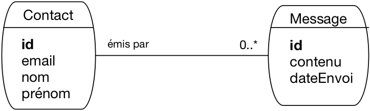
Fig. 57 Le schéma de notre messagerie, première approche¶
Il faut nommer les entités, définir leur identifiant et les cardinalités des associations. Ici, nous avons une première ébauche qui semble raisonnable. Nous représentons des entités qui émettent des messages. On aurait pu nommer ces entités « Personne » mais cela aurait semblé exclure la possibilité de laisser une application envoyer des messages (c’est le genre de point à clarifier lors de la prochaine réunion). On a donc choisi d’utiliser le terme plus neutre de « Contact ».
Même si ces aspects terminologiques peuvent sembler mineurs, ils impactent la compréhension du schéma et peuvent donc mener à des malentendus. Il est donc important d’être le plus précis possible.
Le schéma montre qu’un contact peut envoyer plusieurs messages, mais qu’un message n’est envoyé que par un seul contact. Il manque sans doute les destinataires du message. On les ajoute donc dans le schéma de la Fig. 58.
{kind=link}
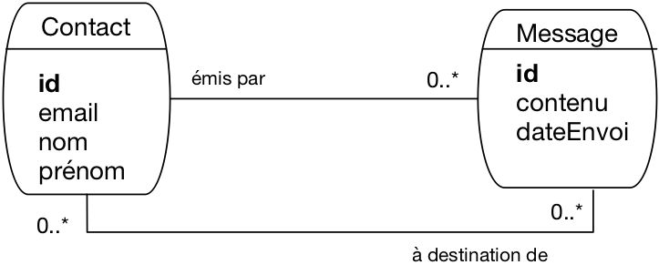
Fig. 58 Le schéma de notre messagerie, avec les destinataires¶
Ici, on a considéré qu’un message peut être envoyé à plusieurs contacts (cela fait effectivement partie des besoins exprimés, voir ci-dessus). Un contact peut évidemment recevoir plusieurs messages. Nous avons donc une première association plusieurs-plusieurs. On pourrait la réifier en une entité nommée, par exemple « Envoi ». On pourrait aussi qualifier l’association avec des attributs propres: le mode d’envoi par exemple serait à placer comme caractéristique de l’association, et pas du message car un même message peut être envoyé dans des modes différents en fonction du destinataire. Une des attributs possible de l’association est d’ailleurs la date d’envoi: actuellement elle qualifie le message, ce qui implique qu’un message est envoyé à la même date à tous les destinataires. C’est peut-être (sans doute) trop restrictif.
On voit que, même sur un cas aussi simple, la conception impose de se poser beaucoup de questions. Il faut y répondre en connaissance de cause: la conception, c’est un ensemble de choix qui doivent être explicites et informés.
Il nous reste à prendre en compte le fait que l’on puisse répondre à un message. On a choisi de représenter de manière générale le fait qu’un message peut être le successeur d’un autre, ce qui a l’avantage de permettre la gestion du cas des renvois et des transferts. On obtient le schéma de la Fig. 59, avec une association réflexive sur les messages.
{kind=link}
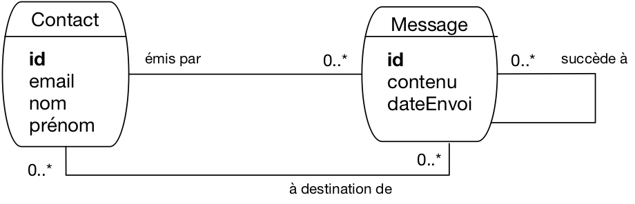
Fig. 59 Le schéma complet de notre messagerie¶
Un schéma peut donc avoir plusieurs successeurs (on peut y répondre plusieurs fois) mais un seul prédécesseur (on ne répond qu’à un seul message). On va s’en tenir là pour notre étude.
À ce stade il n’est pas inutile d’essayer de construire un exemple des données que nous allons pouvoir représenter avec cette modélisation (une « instance » du modèle). C’est ce que montre par exemple la Fig. 60.
{kind=link}
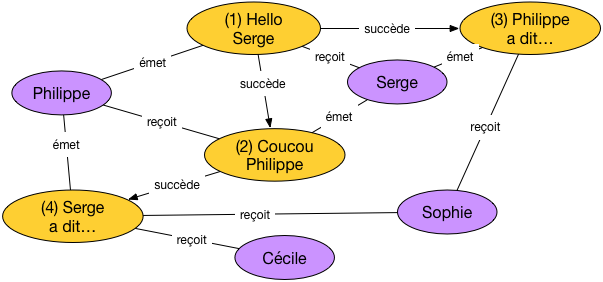
Fig. 60 Une instance (petite mais représentative) de notre messagerie¶
Sur cet exemple nous avons quatre contacts et quatre messages. Tous les cas envisagés sont représentés:
un contact peut émettre plusieurs messages (c’est le cas pour Serge ou Philippe)
un contact peut aussi recevoir plusieurs messages (cas de Sophie)
un message peut être envoyé à plusieurs destinataires (cas du message 4, « Serge a dit… », transmis à Sophie et Cécile)
un message peut être le successeur d’un (unique) autre (messages 2, 3, 4) ou non (message 1)
un message peut avoir plusieurs successeurs (message 1) mais toujours un seul prédécesseur.
Prenez le temps de bien comprendre comment les propriétés du modèle sont représentées sur l’instance.
Nous en restons là pour notre étude. Cela n’exclut en aucun cas d’étendre le modèle par la suite (c’est inévitable, car des besoins complémentaires arrivent toujours). Il est facile
d’ajouter des attributs aux entités ou aux associations existantes;
d’ajouter de nouvelles entités ou associations.
En revanche, il est difficile de revenir sur les choix relatifs aux entités ou aux associations déjà définies. C’est une très bonne raison pour faire appel à toutes les personnes concernées, et leur faire valider les choix effectués (qui doivent être présentés de manière franche et complète).
Quiz¶


S2: schéma de la base¶
Supports complémentaires:
Maintenant, nous sommes prêts à implanter la base en supposant que le schéma E/A de la Fig. 60 a été validé. Avec un peu d’expérience, la production des commandes de création des tables est directe. Prenons une dernière fois le temps d’expliquer le sens des règles de passage.
Note
Pour appliquer les commandes qui suivent, vous devez disposer d’un accès à un serveur. Une base doit être créée. Par exemple:
create database Messagerie
Et vous disposez d’un utilisateur habilité à créer des tables dans cette base. Par exemple:
grant all on Messagerie.* to athénaïs identified by 'motdepasse'
On raisonne en terme de dépendance fonctionnelle. Nous avons tout d’abord celles définies par les entités.
\(idContact \to nom, prénom, email\)
\(idMessage \to contenu, dateEnvoi\)
C’est l’occasion de vérifier une dernière fois que tous les attributs
mentionnés sont atomiques (email par exemple représente
une seule adresse électronique, et pas une liste) et qu’il
n’existe pas de dépendance fonctionnelle non explicitée. Ici,
on peut trouver la DF suivante:
\(email \to idContact, nom, prénom\)
Elle nous dit que email est une clé candidate. Il faudra le prendre
en compte au moment de la création du schéma relationnel.
Voici maintenant les dépendances données par les associations. La première lie un message au contact qui l’a émis. On a donc une dépendance entre les identifiants des entités.
\(idMessage \to idContact\)
Un fois acquis que la partie droite est l’identifiant du contact, le nommage est libre. Il est souvent utile d’introduire dans ce nommage la signification de l’association représentée. Comme il s’agit ici de l’émission d’un message par un contact, on peut représenter cette DF avec un nommage plus explicite.
\(idMessage \to idEmetteur\)
La seconde DF correspond à l’association plusieurs-à-un liant un message à celui auquel il répond. C’est une association réflexive, et pour le coup la DF \(idMessage \to idMessage\) n’aurait pas grand sens. On passe donc directement à un nommage représentatif de l’association.
\(idMessage \to idPrédécesseur\)
Etant entendu que idPrédécesseur est l’identifiant d’un message.
Nous avons les DF, il reste à identifier les clés. Les attributs
idContact et idMessage sont les clés primaires, email
est une clé secondaire, et nous ne devons pas oublier la clé
définie par l’association plusieurs-plusieurs représentant
l’envoi d’un message. Cette clé est la paire (idContact, idMessage),
que nous nommerons plus explicitement (idDestinataire, idMessage).
Voilà, nous appliquons l’algorithme de normalisation qui nous donne les relations suivantes:
Contact (idContact, nom, prénom, email)
Message (idMessage, contenu, dateEnvoi, idEmetteur, idPrédécesseur)
Envoi (idDestinataire, idMessage)
Les clés primaires sont en gras, les clés étrangères (correspondant aux attributs issus des associations plusieurs-à-un) en italiques.
Nous sommes prêts à créer les tables. Voici la commande de création de la table Contact.
create table Contact (idContact integer not null,
nom varchar(30) not null,
prénom varchar(30) not null,
email varchar(30) not null,
primary key (idContact),
unique (email)
);
On note que la clé secondaire email est indiquée avec la commande unique. Rappelons
pourquoi il semble préférable de ne pas la choisir pour clé primaire: la clé primaire
d’une table est référencée par des clés étrangères dans d’autres tables. Modifier la clé
primaire implique de modifier de manière synchrone les clés étrangères,
ce qui peut être assez délicat.
Voici la table des messages, avec ses clés étrangères.
create table Message (
idMessage integer not null,
contenu text not null,
dateEnvoi datetime,
idEmetteur int not null,
idPrédecesseur int,
primary key (idMessage),
foreign key (idEmetteur)
references Contact(idContact),
foreign key (idPrédecesseur)
references Message(idMessage)
)
L’attribut idEmetteur, clé étrangère, est déclaré not null, ce qui impose de toujours
connaître l’émetteur d’un message. Cette contrainte, dite « de participation » semble ici raisonnable.
En revanche, un message peut ne pas avoir de prédécesseur, et idPrédécesseur peut
donc être à null, auquel cas la contrainte d’intégrité référentielle ne s’applique pas.
Et pour finir, voici la table des envois.
create table Envoi (
idDestinataire integer not null,
idMessage integer not null,
primary key (idDestinataire, idMessage),
foreign key (idDestinataire)
references Contact(idContact),
foreign key (idMessage)
references Message(idMessage)
)
C’est la structure typique d’une table issue d’une association plusieurs-plusieurs. La clé est composite, et chacun de ses composants est une clé étrangère. On remarque que la structure de la clé empêche d’un même message soit envoyé deux fois à un même destinataire (plus précisément: on ne saurait pas représenter des envois multiples). C’est un choix dont l’origine remonte à la conception E/A.
Quiz¶
S3: requêtes¶
Supports complémentaires:
Pour commencer, nous devons peupler la base. Essayons de créer l’instance illustrée par la Fig. 60. Les commandes qui suivent correspondent aux deux premiers messages, les autres sont laissés à titre d’exercice.
Il nous faut d’abord au moins deux contacts.
insert into Contact (idContact, prénom, nom, email)
values (1, 'Serge', 'A.', 'serge.a@inria.fr');
insert into Contact (idContact, prénom, nom, email)
values (4, 'Philippe', 'R.', 'philippe.r@cnam.fr');
L’insertion du premier message suppose connue l’identifiant de l’emetteur. Ici, c’est Philippe R., dont l’identifiant est 4. Les messages eux-mêmes sont (comme les contacts) identifiés par un numéro séquentiel.
insert into Message (idMessage, contenu, idEmetteur)
values (1, 'Hello Serge', 4);
Attention, la contrainte d’intégrité référentielle sur la clé étrangère implique que l’émetteur (Philippe) doit exister au moment de l’insertion du message. Les insertions ci-dessus dans un ordre différent entraineraient une erreur.
Note
Laisser l’utilisateur fournir lui-même l’identifiant n’est pas du tout pratique. Il faudrait mettre en place un mécanisme de séquence, dont le détail dépend (malheureusement) du SGBD.
Et la définition du destinataire.
insert into Envoi (idMessage, idDestinataire) values (1, 1);
La date d’envoi n’est pas encore spécifiée (et donc laissée à null) puisque
la création du message dans la base ne signifie pas qu’il a été envoyé. Ce sera
l’objet des prochaines sessions.
Nous pouvons maintenant insérer le second message, qui est une réponse au premier et doit donc référencer ce dernier comme prédécesseur. Cela suppose, encore une fois, de connaître son identifiant.
insert into Message (idMessage, contenu, idEmetteur, idPrédecesseur)
values (2, 'Coucou Philippe', 1, 1);
On voit que la plupart des données fournies sont des identifiants divers, ce qui rend les insertions par expression directe de requêtes SQL assez pénibles et surtout sujettes à erreur. Dans le cadre d’une véritable application, ces insertions se font après saisie via une interface graphique qui réduit considérablement ces difficultés.
Nous n’avons plus qu’à désigner le destinataire de ce deuxième message.
insert into Envoi (idMessage, idDestinataire)
values (2, 4);
Bien malin qui, en regardant ce nuplet, pourrait deviner de quoi et de qui on parle. Il s’agit purement de la définition d’un lien entre un message et un contact.
Voici maintenant quelques exemples de requêtes sur notre base. Commençons par chercher les messages et leur émetteur.
select idMessage, contenu, prénom, nom
from Message as m, Contact as c
where m.idEmetteur = c.idContact
Comme souvent, la jointure associe la clé primaire (de Contact) et la clé
étrangère (dans le message). La jointure est l’opération inverse de la normalisation:
elle regroupe, là où la normalisation décompose.
On obtient le résultat suivant (en supposant que la base correspond à l’instance de la Fig. 60).
idMessage |
contenu |
prénom |
nom |
|---|---|---|---|
1 |
Hello Serge |
Philippe |
R |
2 |
Coucou Philippe |
Serge |
A |
3 |
Philippe a dit … |
Serge |
A |
4 |
Serge a dit … |
Philippe |
R |
Cherchons maintenant les messages et leur prédécesseur.
select m1.contenu as 'Contenu', m2.contenu as 'Prédecesseur'
from Message as m1, Message as m2
where m1.idPrédecesseur = m2.idMessage
Ce qui donne:
Contenu |
Prédecesseur |
|---|---|
Coucou Philippe |
Hello Serge |
Philippe a dit … |
Hello Serge |
Serge a dit … |
Coucou Philippe |
Quelle est la requête (si elle existe…) qui donnerait la liste complète des prédécesseurs d’un message? Réflechissez-y, la question est épineuse et fera l’objet d’un travail complémentaire.
Et voici une requête d’agrégation: on veut tous les messages envoyés à plus d’un contact.
select m.idMessage, contenu, count(*) as 'nbEnvois'
from Message as m, Envoi as e
where m.idMessage = e.idMessage
group by idMessage, contenu
having nbEnvois > 1
Si une requête est un tant soit peu compliquée et est amenée à être exécutée souvent, ou encore si le résultat de cette requête est amené à servir de base à des requêtes complémentaires, on peut envisager de créer une vue.
create view EnvoisMultiples as
select m.idMessage, contenu, count(*) as 'nbEnvois'
from Message as m, Envoi as e
where m.idMessage = e.idMessage
group by idMessage, contenu
having nbEnvois > 1
Pour finir, un exemple de mise à jour: on veut supprimer les messages anciens, disons ceux antérieurs à 2015.
delete from Message; where year(dateEnvoi) < 2015
Malheureusement, le système nous informe qu’il a supprimé tous les messages:
All messages deleted. Table message is now empty..
Que s’est-il passé? Un point virgule mal placé (vérifiez). Est-ce que tout est perdu? Non, réfléchissez et trouvez le bon réflexe. Cela dit, les mises à jour et destructions devraient être toujours effectuées dans un cadre très contrôlé, et donc par l’intermédiaire d’une application.
Quiz¶
S4: Programmation (Python)¶
Supports complémentaires:
Voici maintenant quelques exemples de programmes accédant à notre base de données. Nous reprenons notre hypothèse d’une base nommée “”Messagerie », gérée par un SGBD relationnel (disons, ici, MySQL). Notre utilisatrice est Athénaïs: elle va écrire quelques scripts Python pour exécuter ses requêtes (Fig. 61).
Note
Le choix de Python est principalement motivé par la concision et la simplicité. On trouverait à peu près l’équivalent des programmes ci-dessous dans n’importe quel langage (notamment en Java,avec l’API JDBC). Par ailleurs, l’interface Python illustrée ici est standard pour tous les SGBD et nos scripts fonctionneraient sans doute à peu de chose près avec Postgres ou un autre.
Nos scripts sont des programmes clients, qui peuvent s’exécuter sur une machine, se connecter par le réseau au serveur de données, auquel ils transmettent des commandes (principalement des requêtes SQL). Nous sommes dans l’architecture très classique de la Fig. 61.
{kind=link}
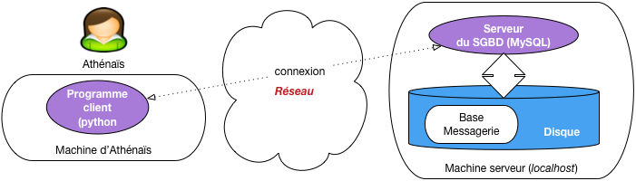
Fig. 61 Architecture d’un programme dialoguant avec un serveur¶
Un programme de lecture¶
Pour établir une connexion, tout programme client doit fournir au moins 4 paramètres: l’adresse de la machine serveur (une adresse IP, ou le nom de la machine), le nom et le mot de passe de l’utilisateur qui se connecte, et le nom de la base. On fournit souvent également des options qui règlent certains détails de communication entre le client et le serveur. Voici donc la connexion à MySQL avec notre programme Python.
connexion = pymysql.connect
('localhost',
'athénaïs',
'motdepasse',
'Messagerie',
cursorclass=pymysql.cursors.DictCursor)
Ici, on se connecte à la machine locale sous le compte d’Athénaïs, et on accède
à la base Messagerie. Le dernier paramètre est une option cursorClass qui
indique que les données (nuplets) retournés par le serveur seront représentés
par des dictionnaires Python.
Note
Un dictionnaire est une structure qui associe des clés (les noms des attributs) et des valeurs. Cette structure est bien adaptée à la représentation des nuplets.
Un curseur est créé simplement de la manière suivante:
curseur = connexion.cursor()
Une fois que l’on a créé un curseur, on s’en sert pour exécuter une requête.
curseur.execute("select * from Contact")
À ce stade, rien n’est récupéré côté client. Le serveur a reçu la requête, a créé
le plan d’exécution et se tient prêt à fournir des données au client dès que ce
dernier les demandera. Comme nous l’avons vu dans le chapitre sur la programmation,
un curseur permet de parcourir le résultat d’une requête. Ici ce résultat est obtenu globalement avec
la commande fetchAll() (on pourrait utiliser fetchOne()) pour récupérer les nuplets un par un).
Le code Python pour parcourir tout le résultat est donc:
for contact in curseur.fetchall():
print(contact['prénom'], contact['nom'])
La boucle affecte, à chaque itération, le nuplet courant à la variable contact.
Cette dernière est donc un dictionnaire dont chaque entrée associe le nom de l’attribut
et sa valeur.
Et voilà. Pour résumer, voici le programme complet, qui est donc remarquablement concis.
import pymysql
import pymysql.cursors
connexion = pymysql.connect('localhost', 'athénaïs',
'motdepasse', 'Messagerie',
cursorclass=pymysql.cursors.DictCursor)
curseur = connexion.cursor()
curseur.execute("select * from Contact")
for contact in curseur.fetchall():
print(contact['prénom'], contact['nom'])
Bien entendu, il faudrait ajouter un petit travail d’ingénierie pour ne pas donner les paramètres de connexion sous forme de constante mais les récupérer dans un fichier de configuration, et ajouter le traitement des erreurs (traiter par exemple un refus de connexion).
Une transaction¶
Notre second exemple montre une transaction qui sélectionne tous les messages non encore envoyés, les envoie, et marque ces messages en leur affectant la date d’envoi. Voici le programme complet, suivi de quelques commentaires.
1 import pymysql
2 import pymysql.cursors
3 from datetime import datetime
4
5 connexion = pymysql.connect('localhost', 'athénaïs',
6 'motdepasse', 'Messagerie',
7 cursorclass=pymysql.cursors.DictCursor)
8
9 # Tous les messages non envoyés
10 messages = connexion.cursor()
11 messages.execute("select * from Message where dateEnvoi is null")
12 for message in messages.fetchall():
13 # Marquage du message
14 connexion.begin()
15 maj = connexion.cursor()
16 maj.execute ("Update Message set dateEnvoi='2018-12-31' "
17 + "where idMessage=%s", message['idMessage'])
18
19 # Ici on envoie les messages à tous les destinataires
20 envois = connexion.cursor()
21 envois.execute("select * from Envoi as e, Contact as c "
22 +" where e.idDestinataire=c.idContact "
23 + "and e.idMessage = %s", message['idMessage'])
24 for envoi in envois.fetchall():
25 mail (envoi['email'], message['contenu')
26
27 connexion.commit()
Donc, ce programme effectue une boucle sur tous les messages qui n’ont pas
de date d’envoi (lignes 10-12). À chaque itération, le cursor affecte une variable message.
Chaque passage de la boucle donne lieu à une transaction, initiée avec
connexion.begin() et conclue avec connexion.commit(). Cette
transaction effectue en tout et pour tout une seule mise à jour,
celle affectant la date d’envoi au message (il faudrait bien entendu
trouver la date du jour, et ne pas la mettre « en dur »).
Dans la requête update (lignes 16-17), notez qu’on a séparé la requête SQL et ses paramètres
(ici, l’identifiant du message). Cela évite de construire la requête comme
une chaîne de caractères.
On ouvre ensuite un second curseur (lignes 20-24), sur les destinataires du message, et on envoie ce dernier.
Une remarque importante: les données traitées (message et destinataires) pourraient être récupérées en une seule requête SQL par une jointure. Mais le format du résultat (une table dans laquelle le message est répété avec chaque destinataire) ne convient pas du tout à la structure du programme dont la logique consiste à récupérer d’abord le message, puis à parcourir les envois, en deux requêtes. En d’autres termes, dans ce type de programme (très courant), SQL est sous-utilisé. Nous revenons sur ce point dans la dernière session.
Quiz¶
S5: aspects transactionnels¶
Supports complémentaires:
Reprenons le programme transactionnel d’envoi de message. Même sur un exemple aussi simple, il est utile de se poser quelques questions sur ses propriétés dans un environnement sujet aux pannes et à la concurrence.
Une exécution de ce programme crée une transaction par message. Chaque transaction
lit un message sans date d’envoi dans le curseur, envoie le message, puis
modifie le message dans la base en affectant la date d’envoi. La transaction
se termine par un commit. Que peut-on en déduire, en supposant un environnement
idéal sans panne, où chaque transaction est la seule à accéder à la base quand elle s’exécute?
Dans un tel cas, il est facile de voir que chaque message serait envoyé exactement une fois.
Les choses sont moins plaisantes en pratique, regardons-y de plus près.
Cas d’une panne¶
Imaginons (pire scénario) une panne juste avant le commit, comme illustré
sur la Fig. 62. Cette figure montre la phase d’exécution,
suivie de la séquence des transactions au sein desquelles on a mis en valeur
celle affectant le message \(M_1\).
{kind=link}
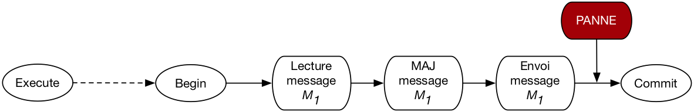
Fig. 62 Cas d’une panne en cours de transaction¶
Au moment du redémarrage après la panne, le SGBD va effectuer un rollback qui affecte la transaction
en cours. Le message reprendra donc son statut initial, sans date d’envoi.
Il a pourtant été envoyé: l’envoi n’étant pas une opération de base de données, le SGBD
n’a aucun moyen de l’annuler (ni même d’ailleurs de savoir quelle action le programme client
a effectuée). C’est donc un premier cas qui viole le comportement
attendu (chaque message envoyé exactement une fois).
Il faudra relancer le programme en espérant qu’il se déroule sans panne. Cette seconde exécution
ne sélectionnera pas les messages traités par la première exécution avant \(M_1\)
puisque ceux-là ont fait l’objet d’une transaction réussie. Selon le principe de durabilité,
le commit de ces transactions réussies n’est pas affecté par la panne.
Le curseur est-il impacté par une mise à jour?¶
Passons maintenant aux problèmes potentiels liés à la concurrence. Supposons, dans un
premier scénario, qu’une mise à jour du message \(M_1\) soit effectuée par une autre transaction
entre l’exécution de la requête et le traitement de \(M_1\). La
Fig. 63 montre l’exécution concurrente de deux exécutions
du programme d’envoi: la première transaction (en vert) modifie le message et effectue
un commit avant la lecture de ce message par la seconde (en orange).
{kind=link}
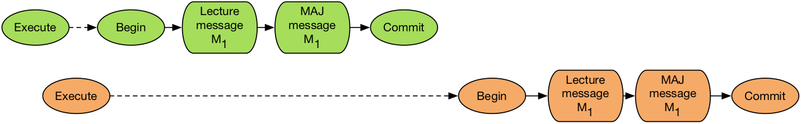
Fig. 63 Cas d’une mise à jour après exécution de la requête mais avant traitement du message¶
Question: cette mise à jour sera-t-elle constatée par la lecture de \(M_1\)? Autrement dit, est-il possible que l’on constate, au moment de lire ce message dans la transaction orange, qu’il a déjà une date d’envoi parce qu’il a été modifié par la transaction verte?
On pourrait être tenté de dire « Oui » puisqu’au moment où la transaction orange débute, le message a été modifié et validé. Mais cela voudrait dire qu’un curseur permet d’accéder à des données qui ne correspondent pas au critère de sélection ! (En l’occurrence, on s’attend à ne recevoir que des messages sans date d’envoi). Ce serait très incohérent.
En fait, tout se passe comme si le résultat du curseur était un « cliché » pris au moment de l’exécution, et immuable durant tout la durée de vie du curseur. En d’autres termes, même si le parcours du résultat prend 1 heure, et qu’entretemps tous les messages ont été modifiés ou détruits, le système continuera à fournir via le curseur l’image de la base telle qu’elle était au moment de l’exécution.
En revanche, si on exécutait à nouveau une requête pour lire le message juste avant la modification
de ce dernier, on verrait bien la mise à jour effectuée par la transaction verte. En résumé:
une requête fournit la version des nuplets effective, soit au moment où la requête est
exécutée (niveau d’isolation read committed), soit au moment
où la transaction débute (niveau d’isolation repeatable read).
Conséquence: sur le scénario illustré par la Fig. 63, on enverra le message deux fois. Une manière d’éviter ce scénario serait de verrouiller tous les nuplets sélectionnés au moment de l’exécution, et d’effectuer l’ensemble des mises à jour en une seule transaction.
Transactions simultanées¶
Voici un dernier scénario, montrant un exécution simultanée ou quasi-simultanée de deux transactions concurrentes affectant le même message (Fig. 64).
{kind=link}
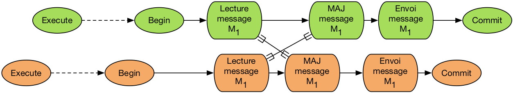
Fig. 64 Exécution concurrente, avec risque de deadlock¶
Cette situation est très peu probable, mais pas impossible. Elle correspond au cas-type
dit « des mises à jour perdues » étudié dans le chapitre sur les transactions. Dans
tous les niveaux d’isolation sauf serializable, le déroulé sera le suivant:
chaque transaction lit séparément le message
une des transactions, disons la verte, effectue une mise à jour
la seconde transaction (orange) tente d’effectuer la mise à jour et est mise en attente;
la transaction verte finit par effectuer un
commit, ce qui libère la transaction orange: le message est envoyé deux fois.
En revanche, en mode serializable, chaque transaction va bloquer l’autre sur le scénario
de la Fig. 64. Le système va détecter cet interblocage et rejeter
une des transactions.
La bonne méthode¶
Ce qui précède mène à proposer une version plus sûre d’un programme d’envoi.
1 # Tous les messages non envoyés
2 messages = connexion.cursor()
3 messages.execute("SET SESSION TRANSACTION ISOLATION LEVEL SERIALIZABLE")
4
5 # Début de la transaction
6 connexion.begin()
7 messages.execute("select * from Message where dateEnvoi is null")
8
9 for message in messages.fetchall():
10 # Marquage du message
11 maj = connexion.cursor()
12 maj.execute ("Update Message set dateEnvoi='2018-12-31' "
13 + "where idMessage=%s", message['idMessage'])
14
15 print ("Envoi du message ...", message['contenu'])
16
17 connexion.commit()
Tout d’abord (ligne 3) on se place en niveau d’isolation sérialisable.
Puis (ligne 5), on débute la transaction à l’extérieur de la boucle du curseur, et on la termine après la boucle (ligne 17). Cela permet de traiter la requête du curseur comme partie intégrante de la transaction.
Au moment de l’exécution du curseur, les nuplets sont réservés, et une exécution simultanée sera mise en attente si elle essaie de traiter les mêmes messages.
Avec cette nouvelle version, la seule cause d’envoi multiple d’un message et l’occurence d’un panne. Et le problème dans ce cas vient du fait que l’envoi n’est pas une opération contrôlée par le serveur de données.
Quiz¶
S6: mapping objet-relationnel¶
Supports complémentaires:
Pour conclure ce cours, voici une discussion sur la méthodologie d’association entre une base de données relationnelle et un langage de programmation, en supposant de plus que ce langage est orienté-objet (ce qui est très courant). Nous avons montré comment intégrer des requêtes SQL dans un langage de programmation, Java (chapitre Procédures et déclencheurs), Python (le présent chapitre), et les mêmes principes s’appliquent à PHP, C#, C++, ou tout autre langage, objet ou non.
Cette intégration est simple à réaliser mais assez peu satisfaisante en terme d’ingénierie logicielle. Commençons par expliquer pourquoi avant de montrer des environnements de développement qui visent à éviter le problème, en associant objets et relations, en anglais object-relationnal mapping ou ORM.
Quel problème¶
Le problème est celui de la grande différence enttre deux représentations (deux modèles) des données
dans un langage objet, les données sont sous forme d’objets, autrement dit des petits systèmes autonomes dotés de propriétés (les données) dont la structure est parfois complexe, étroitement liées à un comportement (les méthodes)
dans une base relationnelle, les données sont des nuplets, de structure élémentaire (un dictionnaire associant des noms et des valeurs atomiques), sans aucun comportement.
dans un langage objet, les objets sont liés les uns aux autres par un référencement physique (pointeurs ou équivalent), et une application manipule donc un graphe d’objets
dans une base relationnelle, les nuplets sont liés par un mécanisme « logiaue » de partage de valeurs (clé primaire, clé étrangère) et on manipule des ensembles, pas des graphes.
Le problème d’une intégration entre un langage de programmation est SQL est donc celui de la conversion d’un modèle à l’autre. Ce n’était pas flagrant sur les quelques exemples simples que nous avons donnés, mais à l’échelle d’une application d’envergure, cette conversion devient pénible à coder, elle ne présente aucun intérêt applicatif, et entraine une perte de productivité peu satisfaisante.
Note
Notons au passage que pour éviter ces écarts entre modèles de données, on a beaucoup travaillé pendant une période sur les bases objets et pas relationnelles. Cette recherche n’a pas vraiment abouti à des résultats vraiment satisfaisants.
Voici un exemple un peu plus réaliste que ceux présentés jusqu’à présent pour notre
application de messagerie. Dans une approche objet, on modéliserait nos données
par des classes, soit une classe Contact et une classe Message. Voici
pour commencer la classe Contact, très simple: elle ne contient que des propriétés
et une méthode d’initialisation.
class Contact:
def __init__(self,id,prenom,nom,email):
self.id=id
self.prenom=prenom
self.nom=nom
self.email=email
Et voici comment on effectue la conversion: dans une boucle sur un curseur
récupérant des contacts, on construit un objet de la classe Contact en lui
passant comme valeurs d’initialisation celles provenant du curseur.
curseur.execute("select * from Contact")
for cdict in curseur.fetchall():
# Conversion du dictionnaire en objet
cobj = Contact(cdict["idContact"], cdict["prénom"],
cdict["nom"], cdict["email"])
C’est la conversion la plus simple possible: elle ne prend qu’une instruction de programmation.
C’est déjà trop dans une optique de productivité optimale: on aimerait que
le curseur nous donne directement l’objet instance de Contact.
Les choses se gâtent avec la classe Message dont la structure est beaucoup plus complexe.
Voici tout d’abord sa modélisation Python.
class Message:
# Emetteur: un objet 'Contact'
emetteur = Contact(0, "", "", "")
# Prédecesseur: peut ne pas exister
predecesseur = None
# Liste des destinataires = des objets 'Contacts'
destinataires = []
# La méthode d'envoi de message
def envoi(self):
for dest in self.destinaires:
L’envoi d’un message prend naturellement la forme d’une méthode de la classe. Envoyer un message devient alors aussi simple que l’instruction:
message.envoi()
Un message est un nœud dans un graphe d’objet, il est lié à un objet de la classe Contact
(l’émetteur), et aux destinataires (objets de la classe Contact également).
Pour instancier un objet de la classe Message à partir de données provenant de la base, il
faut donc:
Lire le message et le convertir en objet
Lire l’émetteur et le convertir en objet de la classe
ContactLire tous les destinataires et les convertir en objets de la classe
Contact
Cela donne beaucoup de code (je vous laisse essayer si vous les souhaitez), d’un intérêt
applicatif nul. De plus, il faudrait idéalement qu’à chaque nuplet d’une table corresponde
un seul objet dans l’application. Avant d’instancier un objet Contact comme émetteur,
il faudrait vérifier s’il n’a pas déjà été instancié au préalable et le réutiliser. On aurait
ainsi, pour cet objet, un lien inverse cohérent: la liste des messages qu’il a émis. En fait,
pour l’application objet, les données ont la forme que nous avons déjà illustrées par la
Fig. 65.
Fig. 65 Une instance (petite mais représentative) de notre messagerie¶
Bref, il faudrait que le graphe soit une image cohérente de la base, conforme à ce qui illustré par la figure, et ce n’est pas du tout facile à faire.
Quelle solution¶
Le rôle d’un système ORM est de convertir automatiquement, à la demande, la base de données sous forme d’un graphe d’objet. L’ORM s’appuie pour cela sur une configuration associant les classes du modèle fonctionnel et le schéma de la base de données. L’ORM génère des requêtes SQL qui permettent de matérialiser ce graphe ou une partie de ce graphe en fonction des besoins.
La Fig. 66 illustre l’architecture d’un système ORM. Il présente à l’application les données sous la forme d’une graphe d’objets (en haut de la figure). Ce graphe est obtenu par production automatique de requêtes SQL et conversion du résultat de ces requêtes en objets.
{kind=link}
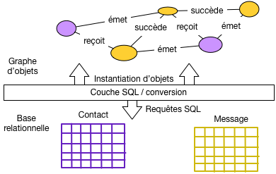
Fig. 66 Architecture d’un système ORM¶
Un système ORM s’appuie sur une configuration qui décrit la correspondance (le mapping) entre une classe et une table. Voici par exemple cette spécification pour un des systèmes ORM les plus développés, Hibernate.
@Entity(table="Message")
public class Message {
@Id
private Integer id;
@Column
private String contenu;
@ManyToOne
private Contact emetteur;
@OneToMany
private Set<Contact> destinataires ;
}
Les annotation @Entity, @Id, @Column,
@ManyToOne,``@OneToMany``, indiquent au système ORM tout ce qui est nécessaire pour associer
objets et nuplets de la base. Ce même système est alors en mesure de produire les requêtes SQL
et de les soumettre au SGBD via l’interface JDBC, ou l’API Python.
Le gain en terme de productivité est très important. Voici, toujours en Hibernate (la syntaxe est la plus claire).
List<Message> resultat =
session.execute("from Message as m "
+ " where m.emetteur.prenom = 'Serge'");
for (Message m : resultat) {
for (Contact c : m.destinataires) {
message.envoi (c.email);
}
}
Notez les deux boucles, la première sur le messages, la seconde sur leurs destinataires. Dans le second cas, aucune requête n’a été executée explicitement: c’est le système ORM qui s’est chargé automatiquement de trouver les destinataires du messages et de les présenter sous la forme d’instances de la classe `` Contact``.
En résumé, les systèmes ORM sont maintenant très utilisés pour les développements d’envergure. Leurs principes sont tous identiques: les accès à la base prennent la forme d’une navigation dans un graphe d’objets et le système engendre les requêtes SQL pour matérialiser le graphe. La conversion entre nuplets de la base et objets de l’application est automatique, ce qui représente un très important gain en productivité de développement. En contrepartie, tend à produire beaucoup de requêtes élémentaires là où une seule jointure serait plus efficace. Pour des bases très volumineuses, l’intervention d’un expert est souvent nécessaire afin de contrôler les requêtes engendrées.
Voici pour cette brève introduction. Pour aller plus loin, l’atelier ci-dessous propose un début de développement avec le framework Django. Vous pouvez aussi consulter le cours complet http://orm.bdpedia.fr consacré à Hibernate.
Quiz¶
Atelier: une application Django¶
Dans cet atelier nous allons débuter la mise en place d’une application de messagerie avec le framework Django, un environnement complet de développement Python, essentiellement orienté vers le développement d’applications Web. Django comprend un composant ORM sur lequel nous allons bien sûr nous concentrer.
Note
Cet atelier suppose quelques compétences en Python et en programmation objet. Si ce n’est pas votre cas, contentez-vous de lire (et comprendre) les différentes étapes détaillées ci-dessous.
Supports complémentaires:
Préliminaires¶
Pour cet atelier vous avez besoin d’un serveur de données relationnel et d’un environnement Python 3. Il faut de plus installer Django, ce qui est aussi simple que:
pip3 install django
Vérifier que Django est bien installé.
python3
>>> import django
>>> print(django.__path__)
>>> print(django.get_version())
Django est installé avec un utilitaire django-admin qui permet de créer un nouveau projet.
Supposons que ce projet s’appelle monappli.
django-admin startproject monappli
Django crée un répertoire monappli avec le code initial du projet. La Fig. 67
montre les quelques fichiers et répertoires créés.
{kind=link}
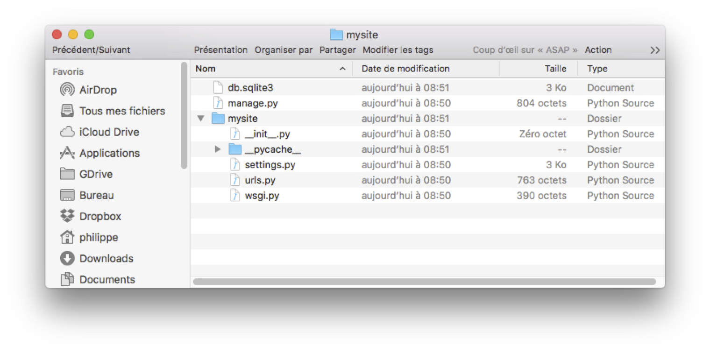
Fig. 67 Le squelettte du projet monappli, créé par Django¶
Le projet est déjà opérationnel: vous pouvez lancer un petit serveur web:
cd monappli
python3 manage.py runserver
Le serveur est en écoute sur le port 8000 de votre machine. Vous pouvez accéder à l’URL http://localhost:8000 avec votre navigateur. Vous devriez obtenir l’affichage de la Fig. 68.
{kind=link}
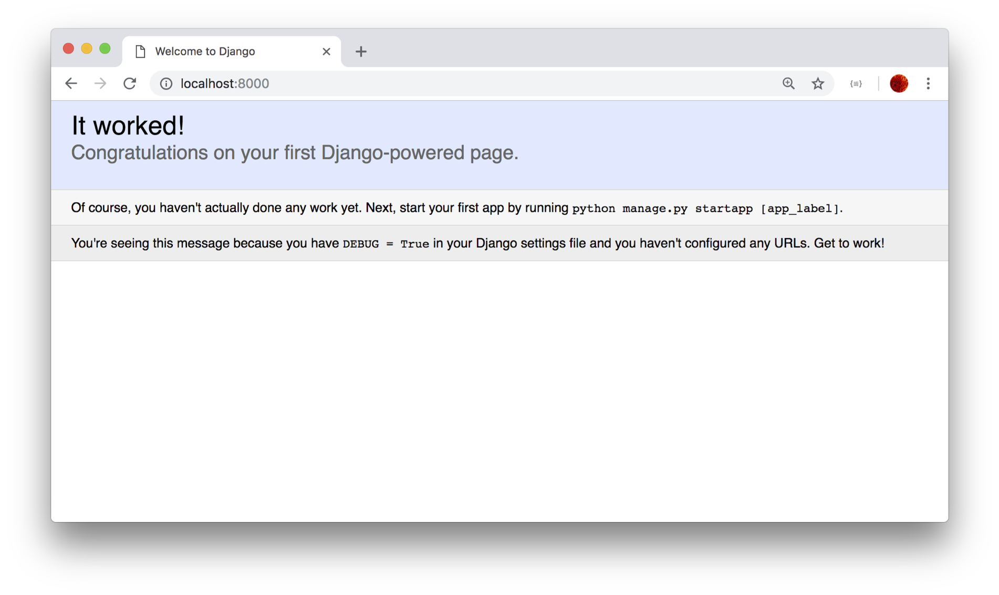
Fig. 68 La première page de l’application¶
Evidemment pour l’instant il n’y a pas grand chose. À partir de là, on peut travailler sur le projet avec un éditeur de texte ou (mieux) un IDE comme Eclipse.
L’application messagerie¶
Un projet Django est un ensemble d’applications.
Au départ, une première application est créée et nommée comme le projet
(donc, pour nous, monappli, cf. Fig. 67). Elle
contient la configuration. Créons notre première application
avec la commande suivante:
python3 manage.py startapp messagerie
Django ajoute un répertoire messagerie qui vient s’ajouter à celui de l’application
de configuration nommé monappli. On obtient le contenu du projet illustré
par la Fig. 69.
{kind=link}
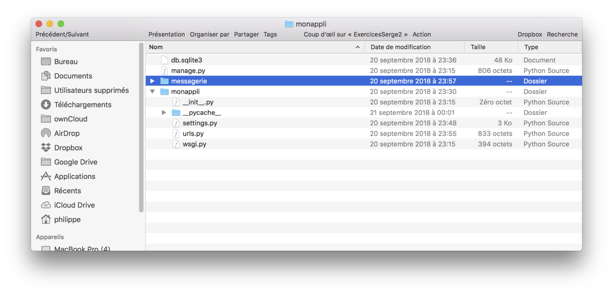
Fig. 69 Nouvelle application¶
Maintenant, il faut ajouter l’application messagerie dans la configuration
du projet, contenue dans le fichier monappli/monappli/settings.py.
Editez ce fichier et modifier le tableau INSTALLED_APPS comme suit.
INSTALLED_APPS = [
'django.contrib.admin',
'django.contrib.auth',
'django.contrib.contenttypes',
'django.contrib.sessions',
'django.contrib.messages',
'django.contrib.staticfiles',
"messagerie"
]
Tant que nous y sommes, configurons la base de données. Supposons que le système soit MySQL, sur la machine locale, avec la base et l’utilisateur suivant:
create database Monappli;
grant all on Monappli.* to philippe identified by 'motdepasse'
Toujours dans le fichier monappli/monappli/settings.py, reportez ces paramètres
dans DATABASES:
DATABASES = {
'default': {
'ENGINE': 'django.db.backends.mysql',
'NAME': 'Monappli',
'USER': 'philippe',
'PASSWORD': 'motdepasse',
'HOST': '127.0.0.1',
'PORT': '3306',
}
}
Bien sûr, vous pouvez utiliser un autre système ou d’autres valeurs de paramètres. Voilà ! Nous sommes prêts à utiliser la couche ORM.
L’ORM de Django: le schéma¶
Dans Django, toutes les données sont des objets Python. Quand ces données sont persistantes, on déclare les classes comme des modèles, et Django se charge alors de convertir automatiquement les objets de ces classes en nuplets de la base de données.
Note
Pourquoi « modèle »? Parce que Django est basé sur une architecture dite MVC, pour Modèle-Vue-Contrôleur. Les « modèles » dans cette architecture sont les données persistantes.
Django (son composant ORM) se charge également automatiquement de créer et modifier le schéma de la base. À chaque ajout, modification, suppression d’une classe-modèle, la commande suivante crée des commandes SQL d’évolution du schéma (nommée migration dans Django).
python3 manage.py makemigrations messagerie
Les commandes de migration sont stockées dans des fichiers placés dans un sous-répertoire
migrations. On applique alors ces commandes SQL en exécutant:
python3 manage.py migrate
Allons-y. Nous allons créer une première classe Contact, que nous plaçons dans le fichier
monappli/messagerie/models.py.
from django.db import models
class Contact(models.Model):
email = models.CharField(max_length=200)
prenom = models.CharField(max_length=200)
nom = models.CharField(max_length=200)
def __str__(self):
return self.prenom + ' ' + self.nom
class Meta:
db_table = 'Contact'
Tous les attributs persistants (ceux qui vont être stockées dans la base)
doivent être d’un type fourni par les modèles Django, ici CharField qui correspond
à varchar. Notez que l’on ne définit pas de clé primaire: un objet Python
a son propre identifiant, qu’il est inutile de déclarer. En revanche, Django
va créer automatiquement un identifiant de base de données. Notez également
que l’on peut spécifier le nom de la table associée dans les méta-données de la classe.
Sinon, Django fournira un nom par défaut (c’est le cas pour les attributs, comme nous allons le voir).
Nous avons donc une classe Python classique, enrichie des spécifications permettant de faire le lien avec la base de données. Nous pouvons alors demander à Django de créer la table correspondante.
python3 manage.py makemigrations messagerie
Vous devriez obtenir la réponse suivante:
Migrations for 'messagerie':
messagerie/migrations/0001_initial.py:
- Create model Contact
Explication: Django a détecté une nouvelle classe-modèle Contact, et a créé la commande
SQL correspondante dans le fichier messagerie/migrations/0001_initial.py. Pour contrôler
cette requête vous pouvez demander son affichage:
python3 manage.py sqlmigrate messagerie 0001
Ce qui donne l’affichage suivant:
BEGIN;
--
-- Create model Contact
--
CREATE TABLE `Contact` (`id` integer AUTO_INCREMENT NOT NULL PRIMARY KEY,
`email` varchar(200) NOT NULL,
`prenom` varchar(200) NOT NULL,
`nom` varchar(200) NOT NULL);
COMMIT;
Vous pouvez apprécier comment les définitions de la classe objet Python ont été transcrites en commande SQL. En particulier, une clé primaire a été ajoutée, un entier auto-incrémenté. Il reste à appliquer cette commande de création:
python3 manage.py migrate
À ce stade, vous devriez avoir la table Contact créée dans votre schéma Monappli: vérifiez!
C’est peut-être le moment de faire une pause pour bien assimiler ce que nous venons de faire. En résumé:
Django effectue maintenant la correspondance entre la classe Python Contact et la table Contact
dans MySQL.
Avant de vérifier comment nous pouvons exploiter cette correspondance, passons à la table Message
qui illustre la gestion des liens entre objets (en Python).
class Message(models.Model):
emetteur = models.ForeignKey(Contact, on_delete=models.CASCADE,
related_name='messages_emis')
contenu = models.TextField()
date_envoi = models.DateTimeField()
predecesseur = models.ForeignKey('self', on_delete=models.CASCADE,
null=True, blank=True, related_name='successeurs')
class Meta:
db_table = 'Message'
def __str__(self):
return self.contenu
Les attributs emetteur et predecesseur sont de type ForeignKey et désignent
respectivement un objet de la classe Contact et un objet de la classe Message
(lien réflexif donc, désigné par self). La valeur de related_name
donne le nom d’une association vu du côté opposé
à celui où elle est définie. Du côté de la classe Contact par exemple, on peut accéder
à tous les messages émis par un contact avec un attribut nommé messages_emis. Un exemple
est donné plus loin.
Note
Django impose l’ajout d’une clause on_delete: voir le chapitre
Schémas relationnel pour des explications à ce sujet.
Créez la spécification de la table avec la commande makemigrations, puis créez
la table avec migrate, comme précédemment.
Voilà, nous savons créer et modifier un schéma.
Exercice Ex-django-1: finalisez le schéma
Créez les classes Contact et Message comme indiqué ci-dessus.
Créez ensuite une classe Envoi pour compléter notre schéma.
Voyons maintenant (enfin) comment on gère les données.
L’ORM de Django: les données¶
Django a créé une interface Web d’administration des données! Cette interface est accessible au super-utilisateur du projet, que nous pouvons créer avec la commande suivante:
python3 manage.py createsuperuser
Entrez un compte super-utilisateur, à votre choix. Il reste à indiquer
que l’on veut engendrer une interface sur nos classes-modèles. Ajoutez
pour cela les lignes suivantes dans messagerie/admin.py.
from django.contrib import admin
from .models import Message, Contact
admin.site.register(Contact)
admin.site.register(Message)
L’interface d’administration est automatiquement engendrée et gérée par le framework. Elle est accessible à l’URL http://localhost:8000/admin/. Django vous demande au préalable de vous connecter avec le compte super-utilisateur créé précédemment: vous devriez alors obtenir l’affichage de la Fig. 70.
{kind=link}
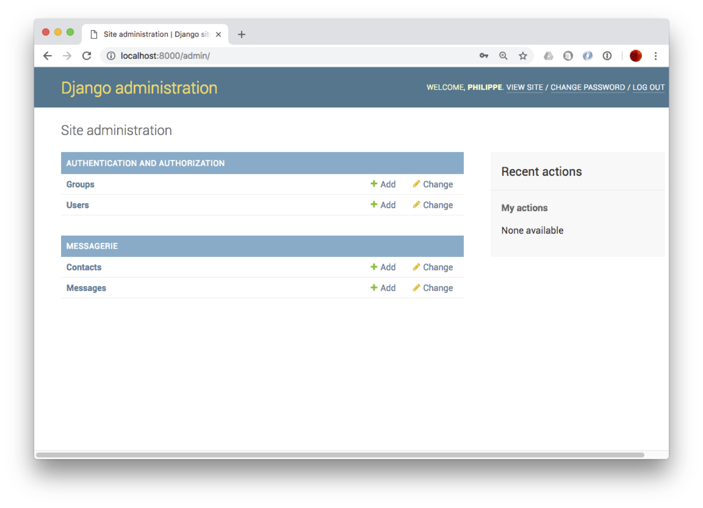
Fig. 70 L’interface d’administration de Django¶
À vous de jouer: accédez à l’interface sur les contacts, explorez-là, appréciez comment, à partir d’une simple correspondance entre la classe objet et la base, il est possible d’engendrer une application permettant les opérations dites CRUD (Create, Read, Update, Delete).
Exercice Ex-django-2: insérez les données
Utilisez l’interface d’administration pour créez l’instance de la Fig. 60.
Les vues¶
Et pour finir nous allons utiliser la couche ORM de Django pour naviguer dans la base de données sans écrire une seule requête SQL (Django s’en charge tout seul). Dans un modèle MVC, la notion de « vue » correspond à la couche de présentation des données. Une vue comprend deux parties:
une action, implantée en Python, qui effectue par exemple des accès à la base de données et/ou des traitements
un modèle d’affichage (template), à ne pas confondre avec de modèle de données.
Chaque vue est associée à une adresse Web (une URL). La correspondance entre les vues et
leur URL est indiquée dans des fichiers urls.py. Commencez
par éditer le fichier monappli/urls.py comme suit:
from django.urls import path, include
from django.contrib import admin
urlpatterns = [
path('admin/', admin.site.urls),
path('messagerie/', include('messagerie.urls')),
]
Puis, éditez le fichier monappli/messagerie/urls.py
from . import views
from django.urls import path
urlpatterns = [
path('contacts', views.contacts, name='contacts'),
]
Cette configuration nous dit que l’URL http://localhost:8000/messagerie/contacts
correspond à la fonction contacts() des vues de l’application messagerie.
Ces fonctions sont toujours placées dans le fichier messagerie/views.py.
Placez-y le code suivant pour la fonction contacts().
from django.shortcuts import render
from .models import Contact, Message
def contacts(request):
messages = Contact.objects.all()
context = {'les_contacts': contacts}
return render(request, 'messagerie/contacts.html', context)
Que fait cette fonction? Elle commence par « charger » tous les messages avec l’instruction:
messages = Message.objects.all()
C’est ici que la couche ORM intervient: cette appel déclenche la requête SQL suivante
select * from Contact
Les nuplets obtenus sont alors automatiquement convertis en objets de la
classe Contact. Ces objets sont ensuite transmis au modèle d’affichage
(le « template ») que voici (à sauvegarder dans monappli/messagerie/templates/messagerie/contacts.html).
{% if les_contacts %}
<ul>
{% for contact in les_contacts %}
<li>
{{ contact.prenom }} {{ contact.nom }}
</li>
{% endfor %}
</ul>
{% else %}
<p>Aucun contact.</p>
{% endif %}
Voilà, oui, je sais, il y a beaucoup de choses qui peuvent sembler obscures. Cela mérite une lecture soigneuse suivie d’autant de relectures que nécessaire. En tout cas une fois tout cela complété, vous devriez pouvoir accéder à l’URL http://localhost:8000/messagerie/contacts et obtenir l’affichage des contacts que vous avez entrés, comme sur la Fig. 71.
{kind=link}
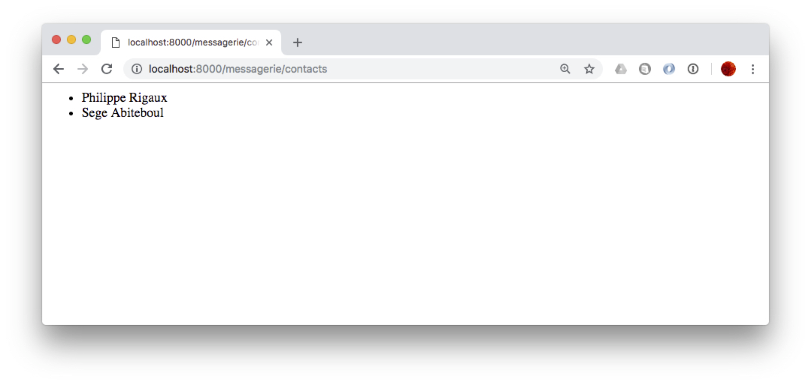
Fig. 71 La liste des contacts, affichés par notre vue¶
On peut faire la même chose avec les messages bien entendu. Le fichier
urls.py est le suivant:
from . import views
from django.urls import path
urlpatterns = [
path('contacts', views.contacts, name='contacts'),
path('messages', views.messages, name='messages'),
]
La fonction suivante est ajoutée dans views.py:
def messages(request):
messages = Message.objects.all()
context = {'les_messages': messages}
return render(request, 'messagerie/messages.html', context)
Et finalement, voici le template
monappli/messagerie/templates/messagerie/messages.html.
{% if les_messages %}
<ul>
{% for message in les_messages %}
<li>
"{{message.contenu}}"" envoyé par
{{ message.emetteur.prenom }} {{ message.emetteur.nom }}
</li>
{% endfor %}
</ul>
{% else %}
<p>Aucun message.</p>
{% endif %}
Vous remarquez sans doute (ou peut-être) que nous pouvons accéder à l’émetteur du message
avec l’expression message.emetteur. C’est un exemple de navigation dans un
modèle objet (passage de l’objet Message à l’objet Contact) qui correspond
à une jointure en SQL. Cette jointure est automatiquement effectuée par la couche ORM
de Django. Plus besoin de faire (directement en tout cas) du SQL!
Exercice Ex-django-3: affichez toutes les données
Affichez non seulement l’émetteur du message mais la liste des destinataires.
Aide: dans la classe Envoi nommez l’association vers les destinataires avec related_name.
message = models.ForeignKey(Message, related_name='destinataires')
À partir du message, on obtient alors les destinataires avec l’expression
message.destinataires. Pour parcourir les destinataires, on écrit donc
quelque chose comme:
{% for dest in message.destinataires.all %}
# Affichage
{% endfor %}
Vous pouvez aussi créer une nouvelle vue qui affiche les contacts avec les messages qu’ils ont envoyés.
Atelier: votre étude de cas¶
Vous devriez maintenant être totalement autonome pour implanter une base de données d’un niveau de sophistication moyen. C’est ce que vous allez essayer de vérifier dans cet atelier.
La modélisation initiale¶
Notre étude porte sur la réalisation d’une application de gestion des treks. Qu’est-ce qu’un trek? C’est une randonnée sur plusieurs jours, découpées en étapes allant d’un point d’hébergement (un refuge, un hôtel, un bivouac) à un autre. Chaque étape est elle-même constituée de sections décrites par un tracé GPS et rencontrant un ensemble de point d’intérêts. Enfin, un point d’intérêt est une localisation distinctive sur le parcours : un monument (fontaine, église, tombeau), un cours d’eau à traverser, un belvédère, etc.
Après quelques mois de réunions (parfois houleuses) consacrées à la conception de la base, l’équipe chargée du projet est arrivée au schéma E/A de la Fig. 72. Ce sera notre point de départ.
{kind=link}
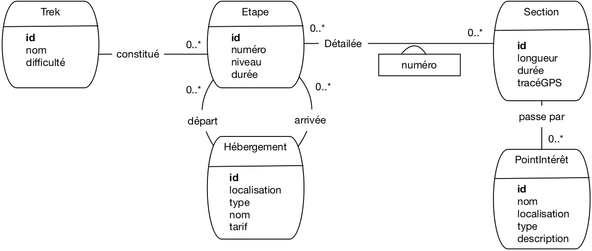
Fig. 72 La modélisation initiale de notre base de treks¶
Voici quelques explications sur les choix effectués. Un trek est donc constitué d’étapes numérotées séquentiellement. Pour chaque étape on connaît l’hébergement de départ et celui d’arrivée. Notez que les concepteurs ont considéré qu’un même hébergement pouvait être le départ de plusieurs étapes, voire le départ d’une étape et l’arrivée d’une autre, ou même le départ et l’arrivée d’une même étape.
Une étape est donc une séquence de sections. Ici, il a finalement été décidé qu’une même section pouvait être partagée par des étapes distinctes (de treks eux-mêmes éventuellement distincts). La localisation est en fait une paire d’attributs (longitude, lattitude) dont les valeurs sont exprimées en coordonnées GPS. Ca se fait en relationnel. Un problème plus délicat est celui du tracé GPS qui ne semble pas compatible avec une modélisation relationnelle. Les concepteurs ont donc imaginé le stocker dans une chaîne de caractères. Cette gestion de données géolocalisées n’est pas très satisfaisante, nous y reviendrons.
Finalement, sur le parcours d’une section on trouve des points d’intérêt.
Quelqu’un a fait remarquer que la durée d’une étape est sans doute la somme des durées des sections, et que cela constituait une redondance. Le chef de projet a considéré que ce n’était pas important.
Tout cela semble à peu près correct. C’est ce que nous appellerons la modélisation initiale. Maintenant à vous de jouer.
Peut-on faire mieux?¶
Posons-nous des questions sur ce schéma pour savoir si d’autres choix sont possibles, et éventuellement meilleurs.
Entités faibles¶
Certains types d’entités vous semblent-ils de bon candidats pour être transformés en type d’entités faibles? Proposez la solution correspondante, et donnez votre avis sur l’intérêt de l’évolution.
Associations réifiées¶
Même question, cette fois pour les associations réifiées.
Spécialisation (difficile)¶
Un œil exercé remarque que les types d’entités Hébergement et PointIntérêt partagent des attributs importants comme le nom, la localisation, le type. Et si un hébergement n’était qu’un point d’intérêt d’un type particulier, se demande cet expert? On pourrait en profiter pour être plus précis sur les types de points d’intérêt et les attributs spécifiques qui les caractérisent. On pourrait par exemple détailler les points de ravitaillement avec leurs heures d’ouverture, les sommets avec leur altitude, les lacs avec leur superficie,… Que deviendrait alors la modélisation ? Exercice un peu difficile, mais très instructif!
Récursion (très difficile)¶
Le même expert (il coûte cher mais il en vaut la peine) pose la question suivante: existe-t-il vraiment une différence profonde de nature entre un trek, une étape et une section? N’est-on pas en train de définir une hiérarchie à trois niveaux pour un même concept générique de parcours alors qu’un petit effort complémentaire permettrait de représenter une hiérarchie plus générique, sans limitation de niveau et sans multiplier des types d’entités proches les uns des autres. Argument fort: on pourrait à l’avenir étendre l’application à d’autres types de parcours: voies d’escalade, rallye automobiles, courses de vélo, etc.
Une telle extension de la modélisation passe par une combinaison de concepts avancés: spécialisation et récursion. À tenter quand tout le reste est maîtrisé. Vraiment difficile mais stimulant.
Une instance-échantillon¶
Comme pour l’application de messagerie, essayez de dessiner un graphe “instance montrant quelle structure aura votre base de données. Prenez un trek de votre choix, cherchez la description sur le Web et vérifiez si le schéma permet de représenter correctement les informations données sur les sites trouvés en étudiant 2 ou 3 étapes.
Si vous n’avez pas d’inspiration, voici une possibilité: deux treks, le GR5 et le Tour du Mont-Blanc (TMB) partagent une partie de leur parcours. Voici, avec une petite simplification, de quoi constituer votre échantillon.
l’étape 1 du TMB va du chalet de La Balme au refuge Robert Blanc
l’étape Alpes-4 du GR5 va des Contamines au Cormet de Roselend
Les sections concernées sont:
Section 1: des Contamines au chalet de la Balme
Section 2: du chalet de la Balme au Col du Bonhomme
Section 3: du Col du Bohomme au refuge des Mottets
Section 4: du Col du Bohomme au Cormet de Roselend
L’étape 1 du TMB est constituée des sections 2 et 3, l’étape Alpes-4 du GR5 des sections 1, 2 et 4.
Quelques points d’intérêts: sur la section 1, on passe par le chalet de Nant Bornant. sur la section 3, on passe par Ville des Glaciers. Notez que le chalet de la Balme est hébergement pour le TMB, un point d’intérêt pour le GR5, d’où l’intérêt sans doute d’unifier les deux concepts par une spécialisation. Sinon, il créer le chalet de la Balme comme un hébergement d’une part, un point d’intérêt de l’autre. Vous voilà confrontés aux soucis typiquesdu concepteur. Si vous ne vous sentez pas à l’aise, faites au plus simple.
Représentez le graphe de ces entités conformément au schéma de notre modélisation. Si vous avez la curiosité de regarder ces parcours sur un site web, vous trouverez certainement des données qui pourraient être ajoutée (le dénivellé positif et négatif par exemple). Demandez-vous où les faire figurer.
Le schéma relationnel¶
Passons maintenant au schéma relationnel. À partir de la modélisation initiale
donnez la liste complète des dépendandes fonctionnelles définies par le schéma de la Fig. 72
appliquez l’algorithme de normalisation pour obtenir le schéma relationnel.
Vous pouvez également produire les variantes issues des choix alternatifs de modélisation (entités faibles, réification) pour méditer sur l’impact de ces choix. Les plus courageux pourront produire la modélisation relationnelle correspondant à l’introduction d’une structure de spécialisation.
Les create table¶
Produisez les commandes de création de table, en indiquant soigneusement les clés primaires et étrangère.
Produisez également les commandes d’insertion pour l’instance échantillon.
Idéalement, vous disposez d’un serveur de données installé quelque part, et vous avez la possibilité de créer le schéma et l’instance.
Les vues¶
Vous souvenez-vous de la redondance entre la durée d’une étape et celle de ses sections (la première est en principe la somme des secondes). Cette redondance et source d’anomalies. Par exemple si je modifie la longueur d’une section suite à un changement d’itinéraire, je ne devrais pas oublier de reporter cette modification sur les étapes comprenant cette section.
On pourrait supprimer la durée au niveau de l’étape, mais, d’un autre côté, disposer de la longueur d’une étape est bien pratique pour l’interrogation. Il existe une solution qui met tout le monde d’accord: créer une vue qui va calculer la durée d’une étape et prendra donc automatiquement en compte tout changement sur celle des sections.
Créez cette vue !
Interrogation SQL¶
Il ne reste plus qu’à exprimer quelques requêtes SQL. Exemples (à adapter à votre instance échantillon):
Afficher les sections qui font partie du TMB
Afficher les étapes avec les noms et tarifs de leurs hébergement de départ et d’arrivée
Quels points d’intérêts sont partagés entre deux trek différents?
Quelles étapes ont plus de deux sections?
Paires d’étapes dont l’hébergement d’arrivée de la seconde est l’hébergement de départ de la seconde
Quelles sections n’ont pas de point d’intérêt
Etc.
Idéalement toujours, vous pouvez interroger directement votre instance-échantillon. Pour MySQL par exemple, l’utilitaire phpMyAdmin dispose d’une fenêtre pour entrer des requêtes SQL et les exécuter.
Et pour aller plus loin¶
Reprenons le cas des données géolocalisées. Les représenter en relationnel est très peu satisfaisant. C’est à peu près acceptable pour une localisation (on donne la lattitude et la longitude), mais pour un tracé, ou une surface, ça ne va pas du tout. Le problème est que ce type de données est associé à des opérations (distance entre deux points, calcul de longueurs ou d’intersection) qui ne sont pas exprimables en SQL.
Très tôt, l’idée d’enrichir le système de types de SQL avec des types abstraits de données (TAD) a été proposée. Les types géométriques sont des exemples typiques de TAD extrêmement utiles et ont été introduits, par exemple, dans Postgres.
À vous de creuser la question si cela vous intéresse. Vous pouvez regarder PostGIS (Postgres Geographic Information System) ou les extensions existant dans d’autres systèmes. Vous sortez des limites du cours et devenez un véritable expert en bases de données. Bonne route sur ce trek difficile mais exaltant!

Ce cours de Philippe Rigaux est mis à disposition selon les termes de la licence Creative Commons Attribution - Pas d’Utilisation Commerciale - Partage dans les Mêmes Conditions 4.0 International.
Table Of Contents
- Introduction
- Le modèle relationnel
- SQL, langage déclaratif
- SQL, langage algébrique
- SQL, récapitulatif
- Conception d’une base de données
- Schémas relationnel
- Procédures et déclencheurs
- Transactions
- Une étude de cas
- Annales des examens
Recherche
Saisissez un ou plusieurs mots-clés.